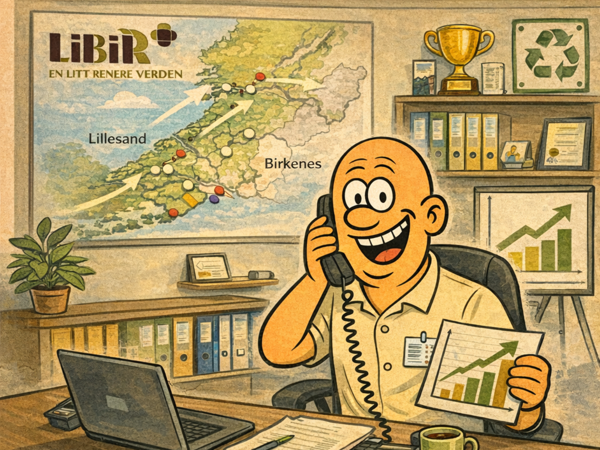
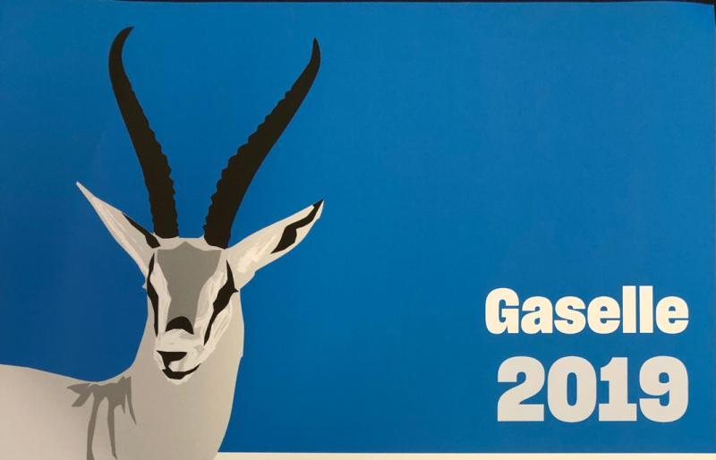
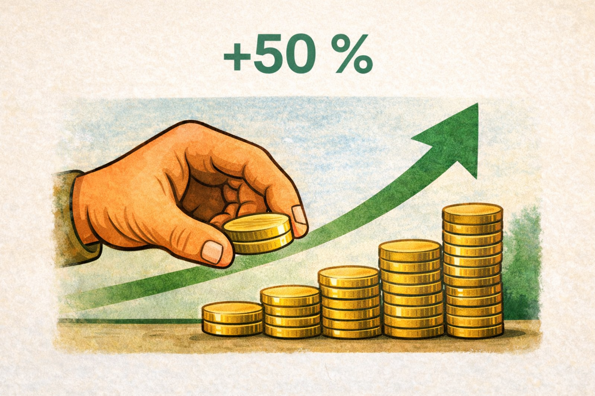

Kapittel 1
Oppvekst i Lillesand
Født og oppvokst i Sørlandets perle Lillesand. Her ble mye av grunnlaget lagt: nysgjerrighet, arbeidsvilje og gleden av å få ting til sammen med andre.
Leder • Forretningsutvikling • Sirkulærøkonomi • Teknologi
Over 20 år i operative lederroller, med tyngde innen drift, selskapsbygging, strategi og gjennomføring.

Et kort overblikk over reisen min.
Født og oppvokst i Sørlandets perle Lillesand. Her ble mye av grunnlaget lagt: nysgjerrighet, arbeidsvilje og gleden av å få ting til sammen med andre.

Bodø, Porsgrunn og Oslo ga nye perspektiver. Erfaringene utenfor Sørlandet gjorde meg tryggere, mer nysgjerrig og mer bevisst på hva slags leder jeg ønsket å bli. Med førstegangstjeneste i Luftforsvaret, studier på BI og jobb i Vesta, If, Bredbåndsfabrikken og Viken fikk jeg med meg mange gode impulser.

Erfaring fra salg, bemanning og kundearbeid hos blant annet Adecco, Würth og som turist- og salgssjef i Destinasjon Sørlandet. Dette lærte meg mye om relasjoner, service og forretning.

I LiBiR fikk jeg ansvar for strategi, drift, økonomi og organisasjon. 16 år i en rolle som krevde både oversikt, gjennomføringsevne og evne til å utvikle mennesker.

Jeg tok initiativ til nye selskaper og nye satsinger. Miljøpartner Sør ble bygget opp til en sterk aktør og senere del av Lindum Sør.

I Agder Miljø jobbet vi med biokull og nye miljøløsninger. Det var en krevende, lærerik og fremtidsrettet fase som også ga tydelige kommersielle resultater.
“En god leder står bakerst med oversikt — men det viktigste er å gi målgivende pasninger.”

16 år
Daglig leder med helhetlig ansvar for strategi, drift, økonomi og organisasjon.

2× Gaselle
Bygget opp selskap, skapte vekst og ledet frem til salg og fusjon.

+50 %
Økte omsetningen 50 % på ett år i en krevende oppbyggingsfase.
Ledelse handler først og fremst om mennesker.
De beste løsningene kommer ofte fra de som jobber nærmest problemet.
Teknologi er et verktøy – ikke en strategi.
Kultur slår strategi når hverdagen blir krevende.
Ledelse handler om å la andre skinne.
Hvis du alltid gjør ditt beste, får du ofte folk med deg.
En operativ leder som liker å være tett på organisasjonen, skape retning og få resultater gjennom mennesker.
Med ro, struktur og tydelig kommunikasjon. Først skaffe oversikt, så prioritere og gjennomføre.
Lytter, analyserer, bygger relasjoner og etablerer tydelig retning før større grep tas.
Praktisk og nysgjerrig. Jeg bruker teknologi til å forbedre drift, beslutninger og arbeidsflyt.
Retning, struktur, organisasjonsbygging, forretningsutvikling og evnen til å gjøre strategi om til handling.
En enkel guide som svarer på spørsmål om bakgrunn, erfaring, resultater og CV.
Vil du vite mer, ta en prat eller invitere til intervju, hører jeg gjerne fra deg.
Telefon: +47 488 81 540